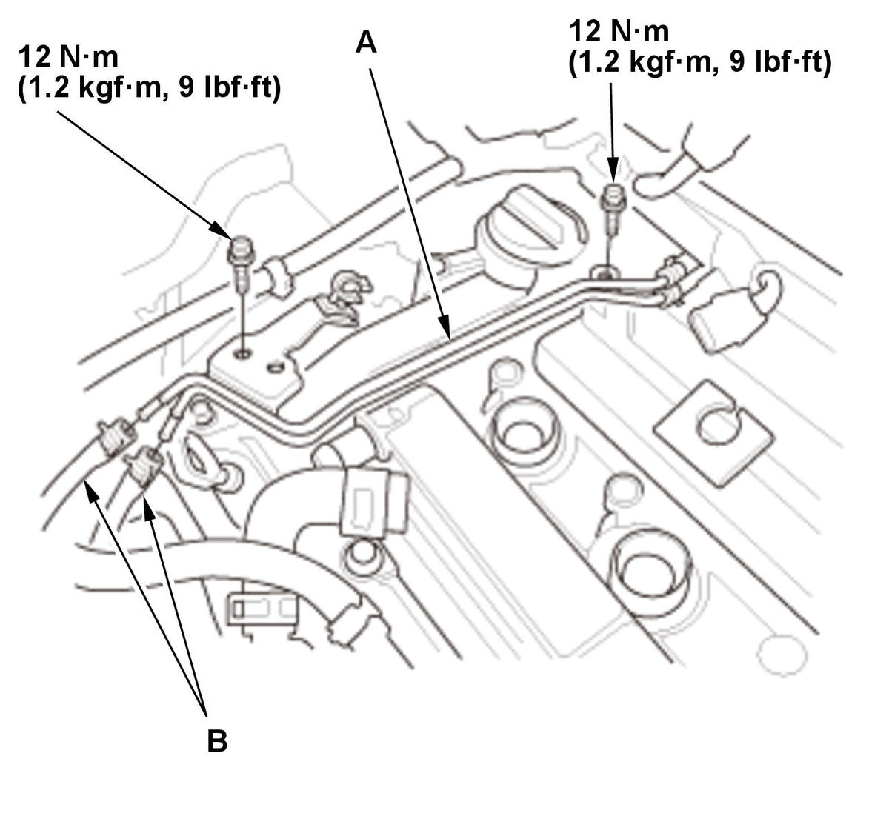
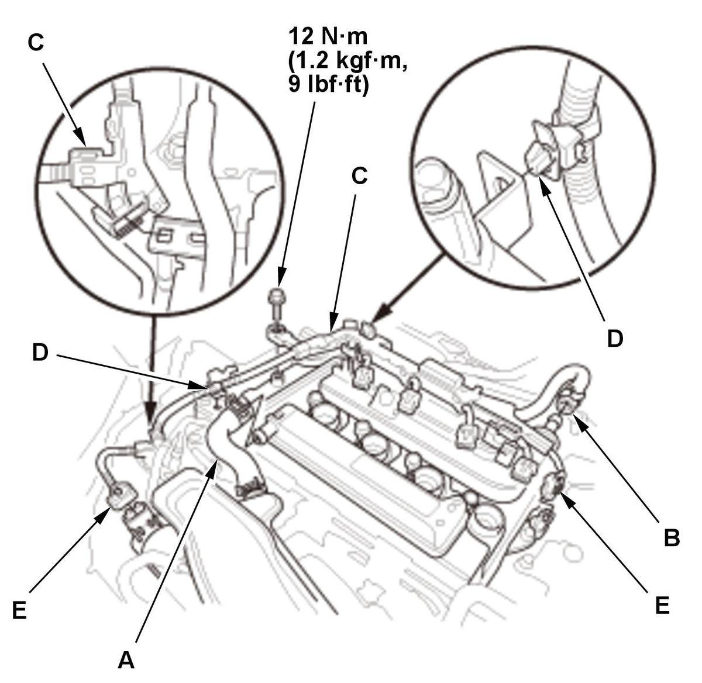
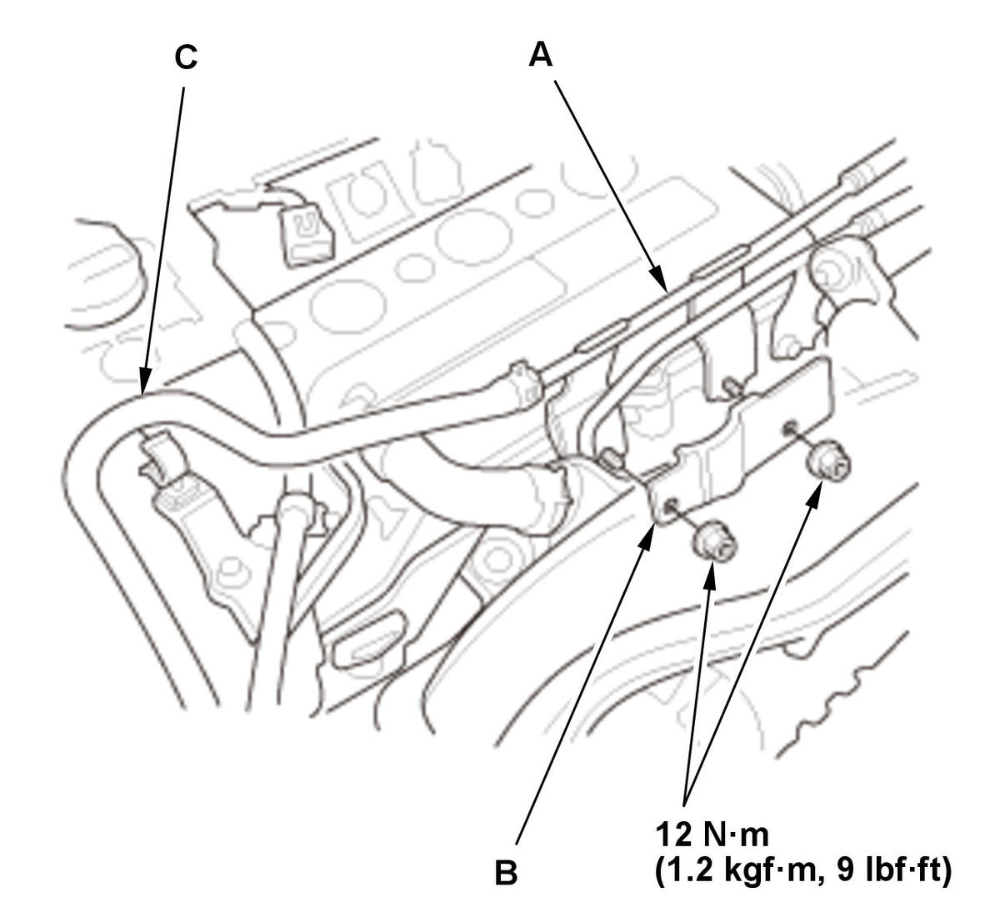

Cylinder Head Cover Removal and Installation (1.5L Engine): Installation
- Cylinder Head Cover - Install
1. Thoroughly clean the head cover gasket (A) and the groove of the cylinder head cover (B). NOTE: Check and, if necessary, replace the head cover gasket.
2. Check the spark plug seals (C) for damage. If any seals are damaged, replace the cylinder head cover.
3. Install the head cover gasket in the groove of the cylinder head cover. Make sure the head cover gasket is seated securely.
4. Apply liquid gasket to the cam chain case, the high pressure fuel pump base, and the cylinder head mating areas. 5. Apply a light coat of new engine oil to the lip of the spark plug seals (A).
6. Set the spark plug seals on the spark plug tubes. Place the cylinder head cover (B) on the cylinder head, then slide the cylinder head cover slightly back and forth to seat the head cover gasket.
7. Inspect the spark plug seals for damage.
8. Tighten the bolts in two steps. In the final step, torque all bolts in sequence to 7.0 N.m (0.71 kgf.m, 5.2 lbf.ft). - PCV Valve - Install
1. If the PCV valve is removed, install the PCV valve. - Turbocharger Bypass Control Valve Solenoid Pipe - InstallFig 1: Turbocharger Bypass Control Valve Solenoid Pipe Components With Torque Specifications (1.5L Engine)

Courtesy of HONDA, U.S.A., INC.1. Install the turbocharger bypass control valve solenoid pipe (A). 2. Connect the hoses (B).
- Connector (MAP Sensor) - Connect
- Breather Hose, PCV Hose, and Harness Holder - InstallFig 2: Breather Hose, PCV Hose And Harness Holder Components With Torque Specifications (1.5L Engine)

Courtesy of HONDA, U.S.A., INC.1. Connect the breather hose (A) and the PCV hose (B). 2. Install the harness holders (C) and the harness clamps (D).
3. Connect the connectors (E).
- Turbocharger Water Return Pipe - Install

Courtesy of HONDA, U.S.A., INC.1. Install the turbocharger water return pipe (A) and the cylinder head cover heat insulator (B). 2. Connect the water bypass hose (C).
- Ignition Coil - Install